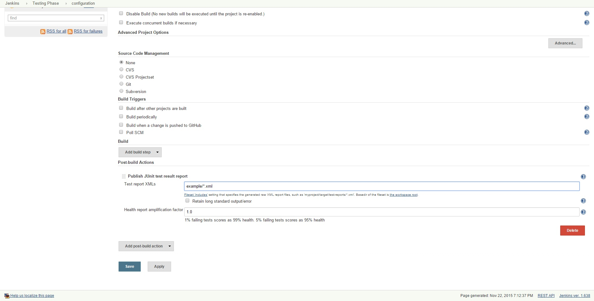

Now you have an app that will be build whenever you push new code we need to test it. Create a new job and call it something like "Testing Phase". You will add your tests to the build steps and if you are using something like jUnit then under "Post-build Actions" choose "Publish JUnit test result report". Write which folder your JUnit XMLs live next in the "Test report XMLs" field. 